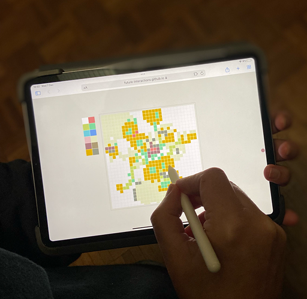

A 6 month undisclosed innovation project with the world's largest sports brand
We continue our ongoing relationship with the national collection to define how digital technology creates opportunities for an enhanced future visitor experience.

Prototype experience to learn about mosaic
We continue our ongoing relationship with the national collection to define how digital technology creates opportunities for an enhanced future visitor experience.
Prototype experience to learn about mosaic
We continue our ongoing relationship with the national collection to define how digital technology creates opportunities for an enhanced future visitor experience.
Prototype experience to learn about mosaic

Design education is central to our practice so to work with Derek Yates again to co-author a course for Future Learn on designing for XR was a highlight for us.
We had the pleasure of working with the cultural icon to develop a future experience design strategy.
More to follow in 2023...